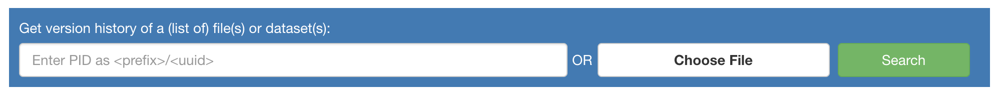

Track a version¶
The Errata Service exploits the Persistent IDentifier (PID) attached to each dataset during the ESGF publication process. The PIDs enable to request the Handle Service from DKRZ to get the version history of a (set of) file/dataset(s). Such a version tracker enables the end users to submit one or several files or datasets identifiers to get back all annotations related to each corresponding issue.
From the Errata Service home page, click on “Search”.

Send your request either with:
A PID following the syntax
<prefix>:<uuid>. PIDs can be found in the metadata of ESGF front-end or directly into the netCDF files as thetracking_idglobal attribute.Example:
21.14100/81b0709b-1546-3cb7-b0d8-e6ad9d1cc727A dataset identifier as a sequence of dot-separated facets that follows the Data Reference Syntax of the corresponding project. The dataset identifiers has to append the dataset version number.
Example:
CMIP6.CMIP.IPSL.IPSL-CM6A-LR.1pctCO2.r1i1p1f1.Omon.si.gn#20180727
Note
Several requests can be sent at once by uploading a local text file with one PID or dataset ID per line.
Click on “Search”.
The Errata Service returns the result within a table per dataset. Each line corresponds to one version of the considered dataset in the chronological order. Useful labels are added to flag the first, last and queried dataset versions. On the right, the annotation picture links to the corresponding issue. The check mark means no known issues for the corresponding version, it is often associated to the corrected version, the latest published version.

{kind=link}